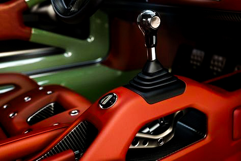

1986

PORSCHE
PORSCHE
PORSCHE
PORSCHE
PORSCHE
PORSCHE
694
PORSCHE
BENJAMIN
DIMSON
-DESGINER
DIMSON
-DESGINER

Ben is a partner in London, focused on European real estate in the Private Equity & Principal Investors Practice. He is an expert in advanced analytics and innovation, serving companies on the opportunities created by digital disruption.
Ben holds considerable experience across the property lifecycle, from investment through to development, asset management, leasing, marketing, and disposal.
Singer is a philosophy, captured in these five words.
We’re driven to present a definitive version for our chosen subject matter. Our ongoing mission is to create the ultimate, enduring collection of iconic design.
Beneath the bonnet is a porsche four-valve, four-camshaft, naturally aspirated, 500 hp air-cooled flat-six engine developed with consultation by hans mezger
The ‘942’ has received underbody and surface aero performance optimization through computational fluid dynamics analysis with consultation by norbert singer.
Singer vehicle design’s + williams advanced engineering offer restoration and modification services, known as DLS (dynamics and lightweighting study) – also developed with a collection of specialists such as BBS motorsport, brembo, and michelin.
POWER
247 HP
TORQUE
310 Nm
247 HP
TORQUE
310 Nm

FEEL THE LUXURY
